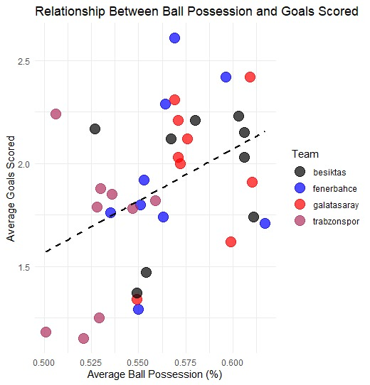
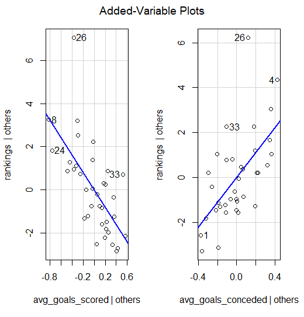
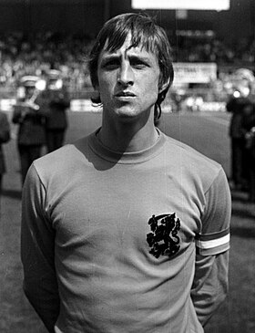
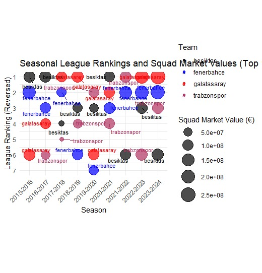

Analysis
Average Goals Conceded vs Rankings
ggplot(df, aes(x = avg_goals_conceded, y = rankings, color = Team)) + geom_point(size = 3) +
# Scatter points geom_smooth(method = "lm", se = FALSE) +
# Regression line scale_color_manual(values = team_colors) + # Team colors scale_y_reverse() +
# Reverse the y-axis labs( title = "Relationship Between Average Goals Conceded and League Rankings", x = "Average Goals Conceded", y = "League Ranking (Reversed)", color = "Team" ) + theme_minimal()

Average Ball Possession vs Goals Scored
```{r}
ggplot(df, aes(x = avg_ball_possession, y = avg_goals_scored, color = Team)) + geom_point(size = 5, alpha = 0.7) + # Scatter points geom_smooth(method = "lm", se = FALSE, linetype = "dashed", color = "black") + # Trendline scale_color_manual(values = c( "fenerbahce" = "blue", "galatasaray" = "red", "besiktas" = "black", "trabzonspor" = "maroon" )) + # Custom team colors labs( title = "Relationship Between Ball Possession and Goals Scored", x = "Average Ball Possession (%)", y = "Average Goals Scored", color = "Team" ) + theme_minimal()
```

Is the goals conceded more important or goals scored on rankings ?
install.packages("car") library(car)
avPlots(model) model <- lm(rankings ~ avg_goals_scored + avg_goals_conceded, data = df) summary(model)
cor_scored <- cor(df$avg_goals_scored, df$rankings) cor_conceded <- cor(df$avg_goals_conceded, df$rankings)

Correlation Summary:
Goals Scored (-0.7267): Strong negative correlation, indicating that more goals scored lead to better rankings (lower values). This suggests offensive performance significantly impacts rankings.
Goals Conceded (0.6880): Strong positive correlation, meaning that conceding more goals leads to poorer rankings (higher values). Defensive performance also plays a key role in rankings.
Comparison: Goals scored (-0.7267) show a slightly stronger influence on rankings than goals conceded (0.6880). While offensive performance has a greater impact, defensive performance remains crucial.
Average Ball Possesion’s impact on Rankings
ggplot(df, aes(x = Season, y = rankings, color = avg_ball_possession, label = Team)) + geom_point(size = 8, alpha = 0.7) +
# Bubbles representing teams geom_text(aes(label = Team), size = 3, vjust = -1) +
# Team names scale_y_reverse() + # Reverse y-axis for rankings scale_color_gradient(low = "yellow", high = "purple", name = "Ball Possession (%)") +
# Gradient for possession labs( title = "Average Ball Possession and League Rankings Over Seasons", x = "Season", y = "League Ranking (Reversed)" ) + theme_minimal() + theme( axis.text.x = element_text(angle = 45, hjust = 1), # Rotate x-axis labels aspect.ratio = 0.7 # Adjust aspect ratio )

Correlation between ball possession and rankings
correlation_possession_rankings <- cor(df$avg_ball_possession, df$rankings, use = "complete.obs")
print(paste("Correlation between ball possession and rankings:", correlation_possession_rankings))
Correlation between ball possession and rankings: -0.317401286701104
The negative value indicates that as the ball possession percentage increases, the ranking improves (lower numerical values represent better rankings). This suggests that higher ball possession is associated with better league performance, but the relationship is not very strong. Weak Correlation:
A correlation value of -0.3174 shows a weak relationship between the two variables. Ball possession alone does not significantly determine league rankings. Conclusion:
While ball possession plays a role in improving rankings, other factors such as goals scored, goals conceded, and defensive or offensive efficiency likely have a stronger influence on the overall performance.
Summary:
Negative Correlation (-0.3174): Higher ball possession is linked to better rankings, but the relationship is weak.
Weak Influence: Ball possession alone has limited impact on rankings compared to factors like goals scored and conceded.
Conclusion: Ball possession contributes to performance but is less significant than other metrics.
Can a bag full of money score a goal?
“I’ve have never seen a bag of money score a goal.” - Johan Cruyff

Squad Market Values impact on Rankings
install.packages("ggrepel")
library(ggrepel)
filtered_df <- df[df$rankings <= 10, ]
ggplot(filtered_df, aes(x = Season, y = rankings, size = squad_market_values, color = Team)) + geom_point(alpha = 0.7) + # Bubble chart geom_text_repel(aes(label = Team), size = 3) + # Prevent overlapping labels scale_y_reverse(breaks = 1:10) + # Reverse y-axis and set breaks from 1 to 10 scale_size_continuous(range = c(3, 10), name = "Squad Market Value (€)") + # Adjust bubble size scale_color_manual(values = c( "fenerbahce" = "blue", "galatasaray" = "red", "besiktas" = "black", "trabzonspor" = "maroon" )) + # Custom team colors labs( title = "Seasonal League Rankings and Squad Market Values (Top 10)", x = "Season", y = "League Ranking (Reversed)", size = "Squad Market Value (€)", color = "Team" ) + theme_minimal() + theme( axis.text.x = element_text(angle = 45, hjust = 1), # Rotate x-axis labels for readability aspect.ratio = 0.7 # Adjust aspect ratio )

Correlation between Squad Market Value and Rankings
correlation_market_values_rankings <- cor(df$squad_market_values, df$rankings, use = "complete.obs")
print(paste("Correlation between squad market values and rankings:", correlation_market_values_rankings))
The correlation between squad market values and rankings is -0.2581, indicating a weak negative correlation. As squad market values increase, rankings tend to improve, but the relationship is not strong.
While higher squad market values are linked to better performance, other factors like team strategy, player performance, and injuries are likely more significant. This also aligns with Johan Cruyff’s quote: “I’ve never seen a bag of money score a goal.” This suggests that while financial resources can support success, they do not guarantee it without proper execution on the field.
Comparing Correlations Average Goals Scored, Average Goals Conceded, Average Ball Possession, Squad Market Values vs Rankings
`# Calculate correlations cor_goals_scored <- cor(df\(avg_goals_scored, df\)rankings, use = “complete.obs”) cor_goals_conceded <- cor(df\(avg_goals_conceded, df\)rankings, use = “complete.obs”) cor_ball_possession <- cor(df\(avg_ball_possession, df\)rankings, use = “complete.obs”) cor_market_values <- cor(df\(squad_market_values, df\)rankings, use = “complete.obs”)
Print the correlations
cat(“Correlation between goals scored and rankings:”, cor_goals_scored, “”) cat(“Correlation between goals conceded and rankings:”, cor_goals_conceded, “”) cat(“Correlation between ball possession and rankings:”, cor_ball_possession, “”) cat(“Correlation between squad market values and rankings:”, cor_market_values, “”)`
Goals Scored and Rankings:
- A strong negative correlation (
-0.72) indicates that scoring more goals is strongly associated with better rankings.
- A strong negative correlation (
Goals Conceded and Rankings:
- A positive correlation (
0.68) shows that conceding fewer goals significantly improves rankings. Defense plays a crucial role in team performance.
- A positive correlation (
Ball Possession and Rankings:
- A weaker negative correlation (
-0.31) suggests that ball possession has a limited impact on rankings.
- A weaker negative correlation (
Squad Market Values and Rankings:
- A weak negative correlation (
-0.26) indicates that higher squad market values are associated with better rankings, but the relationship is not strong.
- A weak negative correlation (
Which Factor is the Most Important?
The factor with the strongest correlation (highest absolute value) has the most significant impact on rankings.
Expected Outcome:
Goals Scored: Likely to be the most important factor for better rankings.
Goals Conceded: Defense is crucial and ranks second.
Ball Possession and Squad Market Value: These factors have a weaker impact on rankings compared to goals scored and conceded.
Conclusion
In summary, achieving a top ranking in a football league is primarily determined by a combination of offensive efficiency (scoring goals) and defensive strength (conceding fewer goals). While ball possession and squad market value contribute to a team’s overall success, their effect on rankings is secondary. The analysis shows that teams with a strong offensive and defensive balance tend to secure the best positions in the league, as they can win matches consistently and maintain a competitive edge throughout the season. Financial resources and possession metrics may enhance a team’s performance, but without effective goal-scoring and defense, they do not guarantee success. Therefore, the most crucial takeaway is that goals scored and goals conceded are the two primary factors driving a team’s ranking, with ball possession and squad market value playing more of a supporting role.